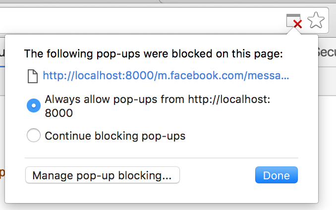

Unified Search
Search all your conversations from one same place
🔍
This will open tabs for: Facebook Messenger, Twitter, and Gmail.
No authentication needed! :-)
Tip: don't forget to allow popups from this page!
